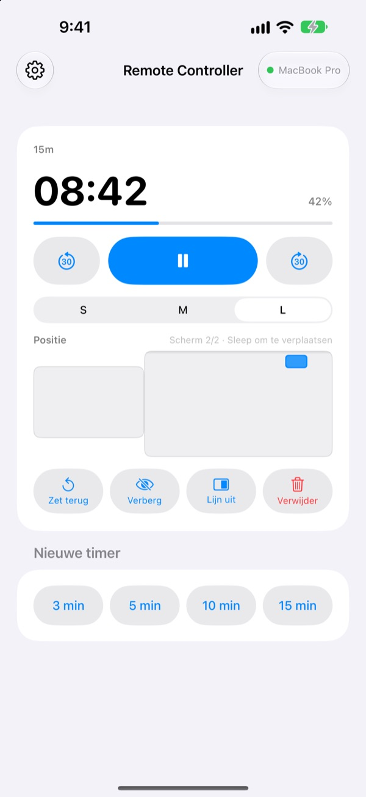
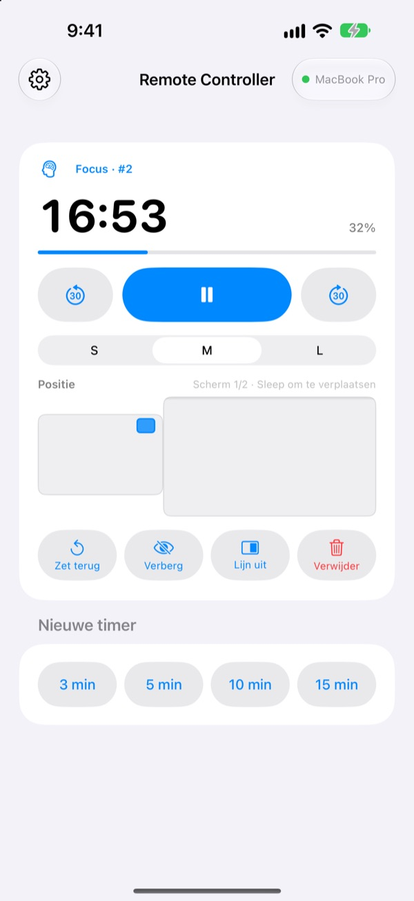
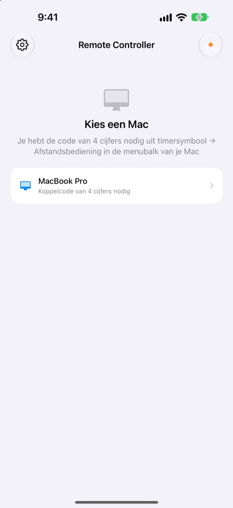

De Mac staat achterin.
De timer heb je in je hand.
Bedien de timers van StickyPresenter op je Mac vanaf je iPhone. Je staat vooraan in de zaal en ziet toch hoeveel tijd je nog hebt. Je pauzeert, telt er 30 seconden bij op of schuift de timer weg van de grafiek die hij afdekt.
Gratis · iOS 17 of nieuwer · Vereist een Mac met StickyPresenter op hetzelfde wifi-netwerk.

Loop je nog terug naar je laptop om de timer aan te passen?
Je presentatie loopt uit en je wilt meer tijd. De timer staat precies op je belangrijkste grafiek. Tot nu toe betekende dat: het podium over lopen en voor iedereen naar het trackpad grijpen. Met Remote Controller blijf je staan waar je staat en tik je één keer op je iPhone.
Zie je resterende tijd en stuur meteen bij
Resterende tijd en voortgang worden elke seconde bijgewerkt. Bij een pomodoro zie je ook of het focus of pauze is en in welke cyclus je zit.
Loop je uit? Tel er 30 seconden bij op. Ben je eerder klaar? Haal er 30 af. Start met één tik een nieuwe timer van 3, 5, 10 of 15 minuten, en wissel de widget tussen S, M en L zodat ook de achterste rij hem kan lezen.

Eén keer de code invoeren, klaar
Open de app en elke Mac op je wifi-netwerk waarop StickyPresenter draait, verschijnt in een lijst. Kies de jouwe en voer de code van vier cijfers in die je in de menubalk van de Mac vindt onder timersymbool ▸ Afstandsbediening.
Daarna maakt de app elke keer dat je hem opent vanzelf verbinding met die Mac. Geen account, geen server: de twee apparaten praten rechtstreeks via je lokale netwerk.

In drie stappen aan de slag
- 1
Open StickyPresenter op je Mac
Zie je het timersymbool in de menubalk, dan ben je klaar. De app blijft daar staan, ook als je alle vensters sluit.
- 2
Open de app op hetzelfde wifi-netwerk
Vraagt hij om toegang tot het lokale netwerk, tik dan op ‘Sta toe’. Zo vindt hij je Mac.
- 3
Kies je Mac en voer de code in
Voer de koppelcode van vier cijfers in die in de menubalk van de Mac onder timersymbool ▸ Afstandsbediening staat, en je hebt de bediening in handen.
Dit doe je vanaf je iPhone
- Resterende tijd
- Tijd over, voortgang, pomodorofase focus of pauze en het cyclusnummer, elke seconde bijgewerkt
- Start · Pauzeer
- Eén grote knop in het midden
- −30 s · +30 s
- De knoppen links en rechts passen een lopende timer direct aan
- Nieuwe timer
- 3, 5, 10 of 15 minuten
- Widgetgrootte
- Widget in S, M of L
- Positie
- Sleep op een miniatuur van je Mac-schermindeling, zelfs naar een tweede scherm
- Verberg
- Verberg de widget even voor je publiek
- Lijn uit
- Haal een kwijtgeraakte widget terug naast het timervenster
- Zet terug · Verwijder
- Begin de timer opnieuw of haal hem weg
- Opdrachten · Siri
- Zeg
Start een timer met Remote Controlleren er loopt een timer op je Mac
De afstandsbediening werkt alleen met timers die op je Mac lopen. Notities en teleprompterteksten worden nooit naar de iPhone gestuurd, en dia’s bladert hij niet door.
Vragen
Kan ik de iPhone-app los gebruiken?
Nee. Remote Controller is de afstandsbediening voor StickyPresenter op de Mac, dus StickyPresenter moet draaien op een Mac op hetzelfde wifi-netwerk. Download de Mac-app via de link hieronder, of via ‘Download de Mac-app’ in de instellingen van de app.
Mijn Mac staat niet in de lijst.
Verschijnt er na 10 seconden geen Mac, dan toont de app een checklist. Loop die van boven naar beneden na: StickyPresenter draait op de Mac (het timersymbool staat in de menubalk), beide apparaten zitten op hetzelfde wifi-netwerk (een gastnetwerk werkt niet), Remote Controller staat aan op de iPhone via Instellingen ▸ Privacy en beveiliging ▸ Lokaal netwerk, StickyPresenter is toegestaan op de Mac via Systeeminstellingen ▸ Privacy en beveiliging ▸ Lokaal netwerk, en een eventuele vpn staat uit.
De app zegt dat de koppelcode verkeerd is.
Voer de vier cijfers in die op dit moment in de menubalk van de Mac onder timersymbool ▸ Afstandsbediening staan. Heeft iemand op de Mac op ‘Nieuwe koppelcode’ geklikt, dan werkt alleen de nieuwe code.
De app zegt dat de Mac deze iPhone niet meer herkent.
Dat gebeurt na ‘Gekoppelde afstandsbedieningen vergeten’ op de Mac, of nadat StickyPresenter opnieuw is geïnstalleerd. Tik op de Mac in de lijst en voer de koppelcode nog één keer in.
De app zegt dat de Mac niet reageert.
Controleer of de Mac niet in de sluimerstand staat, beide apparaten op hetzelfde wifi-netwerk zitten en een eventuele vpn uit staat.
De app zegt dat de Mac-app moet worden bijgewerkt.
StickyPresenter op je Mac is ouder dan de afstandsbediening. Werk het bij via de Mac App Store en kies de Mac daarna opnieuw.
Is het veilig in een vergaderzaal vol Macs?
Ja. De afstandsbediening praat alleen met de ene Mac waaraan hij gekoppeld is, en een afstandsbediening die je code niet kent, kan je Mac niet bereiken. Alles gaat via een versleutelde, directe verbinding binnen hetzelfde netwerk. Heb je je code ooit aan iemand laten zien, klik dan op de Mac op ‘Nieuwe koppelcode’.
Wat gaat er via internet?
Je timers en opdrachten verlaten nooit je lokale netwerk. Via internet gaan alleen anonieme gebruiksstatistieken, crashrapporten en feedback die je zelf verstuurt. In het privacybeleid lees je de details.
Kan Siri vlak voor mijn presentatie een timer starten?
Ja. Zeg ‘Start een timer met Remote Controller’ of gebruik de actie ‘Start timer op Mac’ in de Opdrachten-app. De app opent en start een timer van de gekozen lengte (1 tot 600 minuten) zodra hij met je Mac verbonden is.
Vragen, fouten of ideeën? Mail naar mizzking75@gmail.com, of stuur ze direct vanaf je iPhone via het tandwiel linksboven in de app ▸ Feedback.